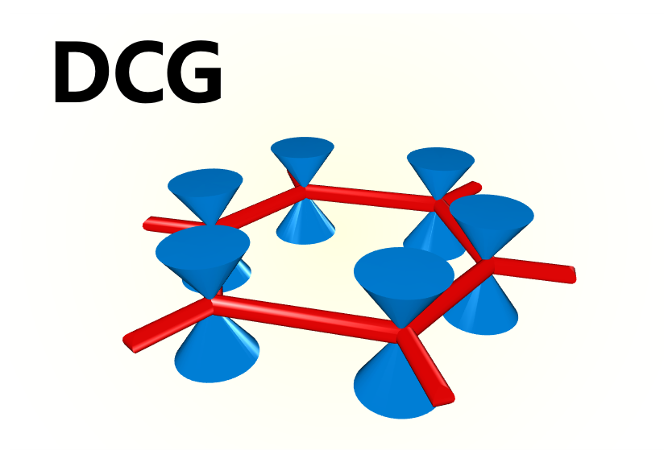

声音定位
LabView
基于DNA拉伸实验的交互式半自动实验数据处理程序后面板(专业物理实验-软物质板块)
基于声音定位项目的LabView搭载Elvis信号实时处理程序后面板(2022年华南区物理实验竞赛：声音定位)
Origin
基于原子发射光谱观测实验的各色二极管发光光谱图(基础物理实验C3.1)
基于宇生μ子探测实验的多通道信号记录3D(专业物理实验-粒子物理板块)
Plot_
基于六角石墨烯狄拉克锥（Dirac Cone of Graphene）的“蜘蛛侠配色”示意图

Nonequilibrium Dynamics in the Chiral Heisenberg Universality Class